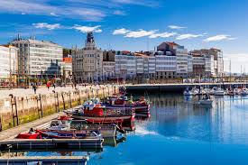
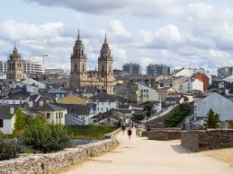
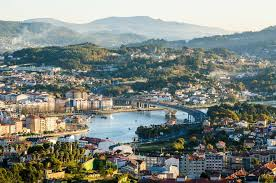

Provincias Gallegas y Lugares Turísticos
| A Coruña | ||
|---|---|---|
|  | ||
|
Torre de Hércules Faro romano y Patrimonio de la humanidad. |
Playa de Riazor Famosa playa urbana ideal para surfistas. |
Casco Antiguo Zona histórica con arquitectura impresionante. |
| Lugo | ||
|  | ||
|
Muralla de Lugo Antigua muralla romana, Patrimonio de la Humanidad. |
Centro Histórico Arquitectura medieval y calles con encanto. |
Playa de las Catedrales Famosa playa con impresionantes formaciones rocosas. |
| Pontevedra | ||
|  | ||
|
Casco antiguo de Pontevedra Zona peatonal con plazas y edificios históricos. |
Isla de la Toja Conocida por sus aguas termales y balnearios. |
Pazo de Oca Un magnífico ejemplo de jardinería y arquitectura. |
| Ourense | ||
 |
||
|
Termas de Ourense Famosas aguas termales en la ciudad. |
Puente Romano Puente histórico sobre el río Miño. |
Catedral de Ourense La catedral es un icono de la ciudad. |